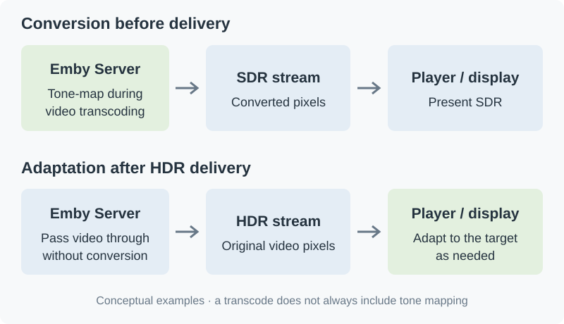

Where Tone Mapping Happens in an Emby Playback Session
The playback method shown by Emby describes how the server delivers the video. It does not describe every step between the original file and the light coming from the screen.
Tone mapping can happen when the server converts HDR video for an SDR playback target. It can also happen after delivery, in a player or in an HDR display adapting the picture to its own brightness limits.

Examples of where adaptation can occur. The diagram is not an inventory of supported combinations for every Emby app.
Start with the video being delivered
With Direct Play, the server does not convert the video. Direct Stream can change the packaging or other tracks while leaving the video intact. In either case, any necessary adaptation of those video pixels takes place downstream.
With video transcoding, the server decodes and re-encodes the video and can change its pixels in between. When that includes HDR-to-SDR conversion, the player receives the resulting SDR picture. Transcoding alone does not establish that tone mapping occurred: a conversion may be needed for another reason.
Then follow the player and display
The Emby Windows FAQ describes tone mapping performed by GPU shaders during presentation. This also shows why software decoding does not necessarily mean software tone mapping: the two stages can use different processors.
If HDR reaches the screen, the screen may still need HDR-to-HDR adaptation. An HDR indicator confirms the signal mode, not that every original highlight is reproduced without adjustment.
When investigating a difference, record the app, playback method, delivered HDR or SDR format, and display mode. Server tone-mapping settings cannot explain a change in a session whose video the server passed through unchanged. Following the actual path narrows the comparison to the stage that could have changed the picture.